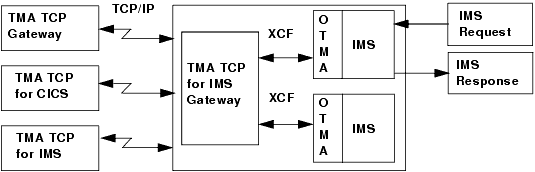
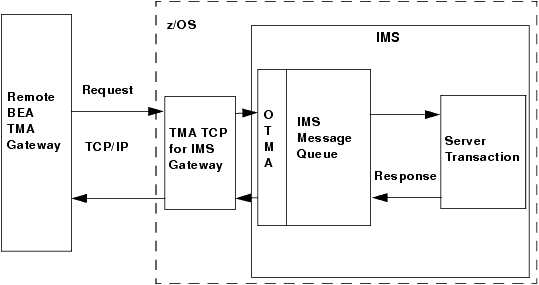
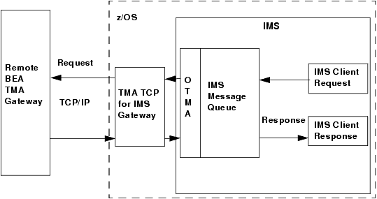

As shown in
Figure 2-1, the TMA TCP for IMS gateway serves as the interface between IMS and remote Oracle Tuxedo Mainframe Adapter gateways via TCP/IP.
Figure 2-1 IMS Processing

Inbound Processing
The gateway “listens” for incoming TCP/IP connection requests from remote gateways. When a request is received, an inbound session is established over which the remote gateway can present requests for service.
As shown in
Figure 2-2, when a request is received from a remote system, it is relayed to IMS which schedules the appropriate server transaction to process the request. If a response is required, the server transaction places the response in the IMS message queue. If the TMA TCP gateway is running as an OTMA client, the response is queued to the transaction pipe and delivered to the client through the cross-system coupling facility (XCF). The response is returned to the remote system over the TCP/IP connection.
Figure 2-2 IMS Inbound Processing

Outbound Processing
The TMA TCP for IMS product can also initiate TCP/IP connections with remote systems. These outbound sessions are used to send IMS client requests to remote systems for processing.
As shown in Figure 2-3, an IMS client transaction initiates a request by placing a properly formatted message into the IMS message queue. When running the gateway, two IMS user exits must be installed to route messages to the OTMA client. (For more information about request/response processing, refer to the
Programming Oracle TMA TCP for IMS section, and for sample user exits, refer to the
Sample JCL and User Exits section.) The gateway retrieves the request and forwards it to the appropriate remote system for processing. When the response (if required) is received from the remote system, it is returned to IMS for delivery to a transaction that processes the response.
Figure 2-3 IMS Outbound Processing

How Oracle TMA TCP for IMS Is Initialized
The TMA TCP for IMS gateway is started by submitting the appropriate JCL (or as a started task) for an OTMA client. The following activities then occur.
The gateway (load module name, BEATCPI) opens a message log (normally allocated to a disk dataset) into which all messages issued during the course of execution are written.
If the message log cannot be opened, the gateway immediately terminates; any messages are written to a SYSOUT dataset by default.
The gateway obtains configuration information from a sequential dataset containing text statements. These statements define the operating environment for TMA TCP for IMS, including the definitions of local and remote gateways. If any configuration errors are detected during initialization, the gateway immediately terminates.
Processing IMS Server Requests
An IMS server request, also referred to as an inbound request (relative to IMS), is a request issued by a remote client for a service provided by an IMS server transaction.
When TMA TCP for IMS receives a request from a remote system, a request message is formatted and is inserted into the IMS message queue, destined for the specified IMS server transaction (the service name for the request corresponds to the transaction code of the IMS server transaction that handles the request).
IMS schedules the specified server transaction to process the request message.
The server transaction retrieves the request message from the IMS message queue and performs the indicated processing.
If a response is required, the server transaction formats a response message and inserts it into the IMS message queue, destined for the TMA TCP for IMS gateway.
The TMA TCP for IMS gateway retrieves the response message from IMS and returns it to the requesting remote system via the TCP/IP connection.
Processing IMS Client Requests
An IMS client request, also referred to as an outbound request (relative to IMS), is a request issued by an IMS application message processing program (MPP) for a service provided by a remote system.
Two Phases of an IMS Client Request
Because of the design philosophy of IMS, processing of an IMS client request occurs in two distinct “phases.”
A request phase whereinthe request is issued during the execution of one transaction (T1).
A corresponding response phase wherein the response is processed during the execution of a second transaction (T2).
Transactions T1 and T2 may in fact be the same transaction ID (with appropriate logic to perform the required request or response processing, based on execution context). T1 and T2 must be two distinct transaction executions. This distinction is necessary because T1 can only initiate a request; it cannot “wait” on the response to that request because the architecture and design philosophy of IMS does not permit this.
How Oracle TMA TCP for IMS Processes an IMS Client Request
An IMS transaction issues a client request by inserting a properly formatted message into the IMS message queue specifying the TMA TCP for IMS OTMA client (through the use of the appropriate IMS user exit) as the destination.
Once the request has been inserted into the Message Queue, the requester is effectively “decoupled” from the request; that is, processing of the request by TMA TCP for IMS proceeds asynchronously with respect to execution of the requesting transaction. The request includes the name (transaction code) of a response transaction that is scheduled by TMA TCP for IMS to process the response to the request.
The TMA TCP for IMS gateway retrieves the request from IMS and validates it for proper format. If any errors are detected, the specified response transaction is immediately scheduled with appropriate return codes.
The requested service name is located in the directory of services offered by remote systems to which TMA TCP for IMS has access. If the requested service cannot be found, or the required remote gateway is currently inaccessible, an error is recognized and the response transaction is immediately scheduled with appropriate return codes.
If a remote service provider is successfully identified for the request, an outbound session is established with the remote system (if one is not available) and the request is sent to the remote system for processing.
If a response is required, TMA TCP for IMS schedules the response transaction (with any response data) when the response is received.
Eventually, if no response is received from the remote system, the request times out, an error is recognized, and the response transaction is scheduled with appropriate return codes.
How Oracle TMA TCP for IMS Shuts Down
Once started, TMA TCP for IMS normally executes as a non-ending job, servicing inbound requests from remote systems and outbound requests originated by IMS client transactions.
Normal termination is initiated when a system operator issues the SHUTDOWN command. In response to a SHUTDOWN command, TMA TCP for IMS performs the following tasks.
Stops accepting new inbound TCP/IP connection requests.
Terminates active inbound sessions.
Terminates active outbound sessions.
Returns control to z/OS.
Note:
Pending or in progress transactions are not allowed to complete prior to the system shutting down.